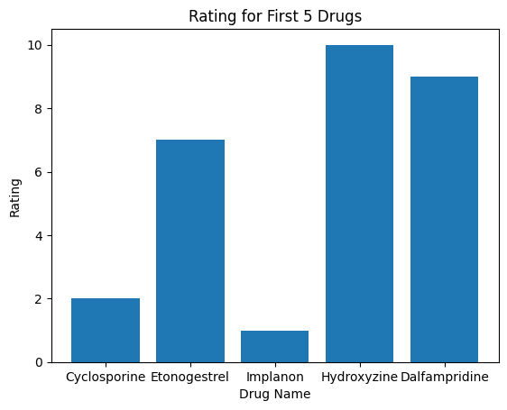
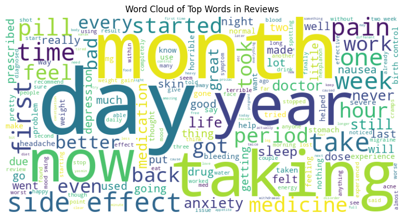
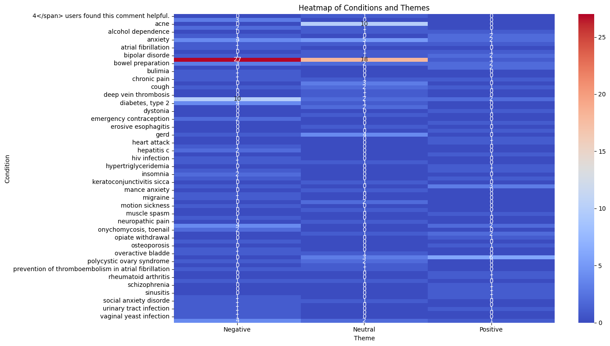
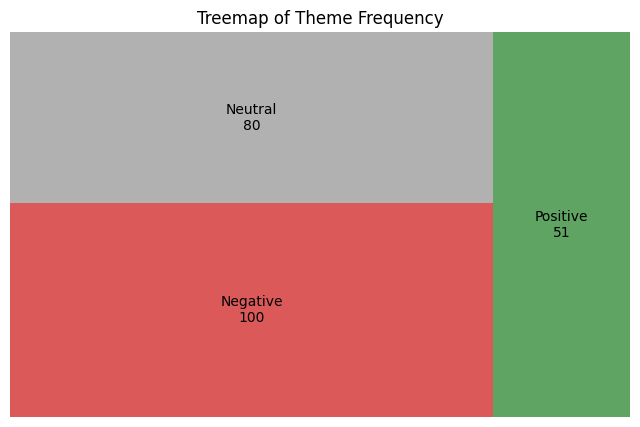

Lab 5.2
Rating for First 5 Drugs

Of the first 5 drugs, Hydroxyzine is rated the highest overall with a rating of 10, and Implanon is the lowest with a rating of 1.
Word Cloud

There are several interesting words that come out in this word cloud, including 'pill', 'taking', and 'side effect'.
Heatmap

It's difficult immediately to tell the theme for the reviews for drugs pertaining to certain conditions, but it's easy to see there's a small amount of Positive reviews, and a lot of Neutral and Negative reviews.
Treemap of Theme Frequency
